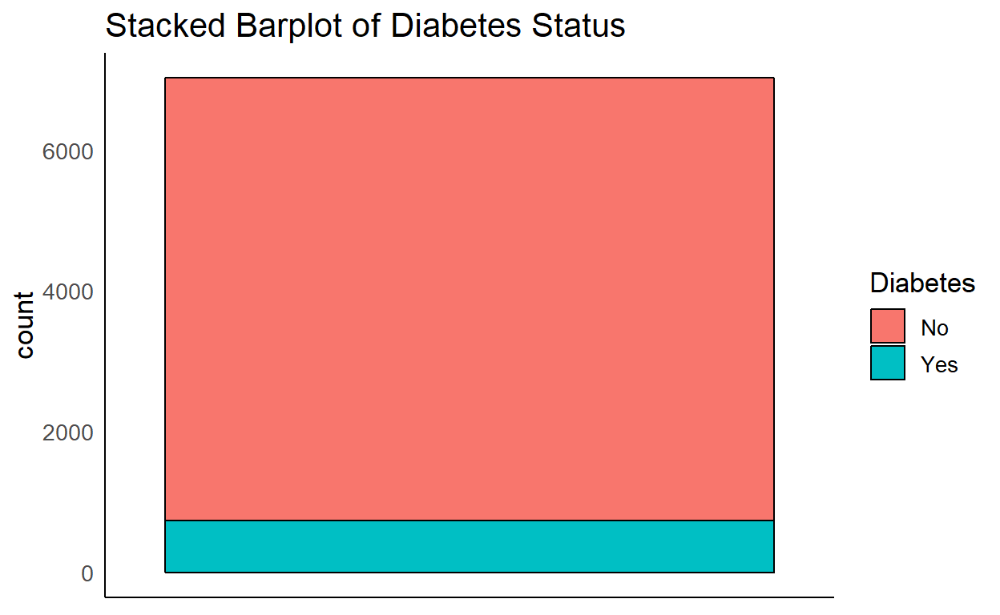
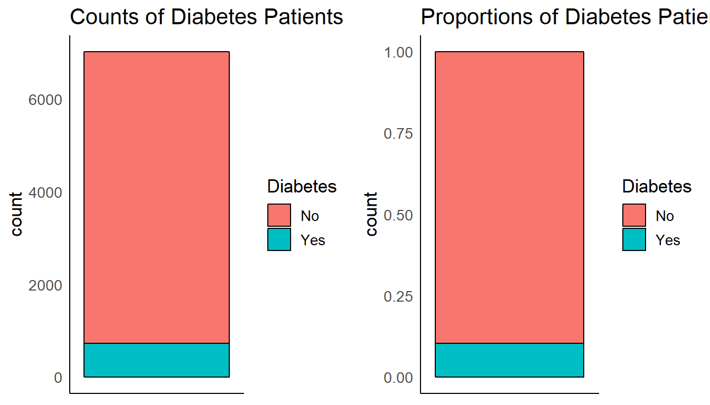
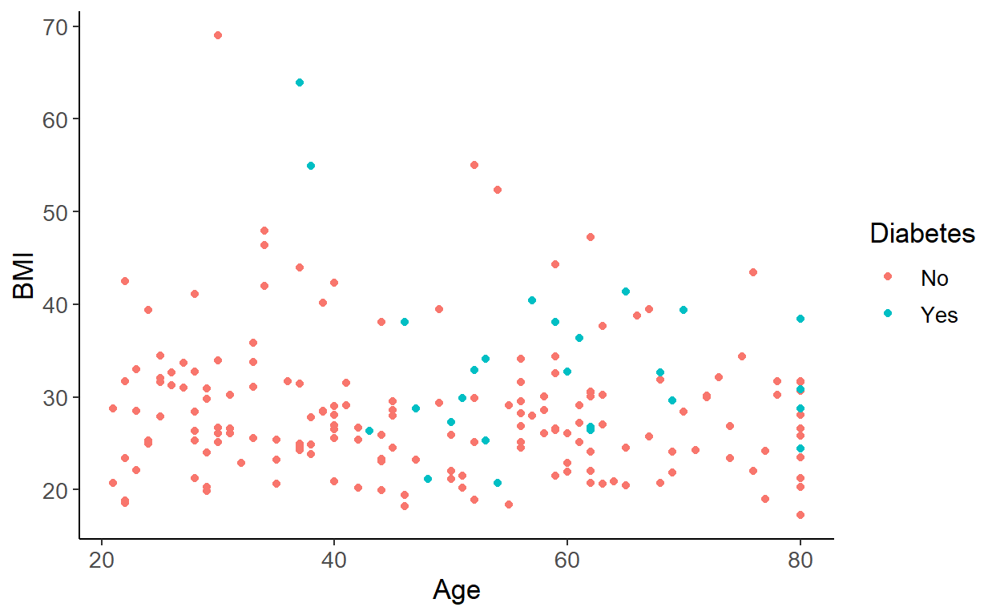

Learning Objectives
- Understand how we can represent different kinds of data
- Understand how to communicate with visualizations
- Understand when visualizations are misleading
Graph literacy https://concord.org/wp-content/uploads/2016/12/pdf/teaching-graph-literacy-across-curriculum.pdf
Why Visualization?
Visualization is good for exploring data because we are really good at evaluating data visually.
- We need to become aware of patterns in the data.
- Sometimes these patterns are desirable:
- Associations

Undesirable Variation
- Sometimes they are not desirable:
- Experimental Artefacts

Outline
- Base Visualizations
- Aesthetics
- Activity
What a graph needs
- Title (what it represents)
- Labeled Axes (with units, preferably)
- Variables and how they are represented
- Scales
- Is it a count or is it a proportion?
- How many variables and their types
- Including ones used to dictate colors, shapes, patterns, sizes, opacities, etc.
- Independent (“predictor”) variables (e.g. time) are usually on the X (horizontal) axis
- Occasionally time is plotted on the vertical axis for specific reasons
- Dependent (“outcome” / “response”) variables are usually on the Y (vertical) axis

The Data (NHANES)
We’re going to look at data from a study called NHANES (National Health and Nutrition Survey).
What does the data actually look like?
Here are the first 10 rows of the data table. Each row of the data corresponds to a patient.
Summary Data
Let’s take a look at a summary of the data.
library(tidyverse)
summary(bmi_diabetes)## BMI Diabetes Gender Age BMIstatus
## Min. :15.02 No :6350 female:3615 Min. :21.00 High:2544
## 1st Qu.:24.20 Yes : 742 male :3479 1st Qu.:33.00 Low :4487
## Median :27.81 NA's: 2 Median :47.00 NA's: 63
## Mean :28.84 Mean :47.71
## 3rd Qu.:32.23 3rd Qu.:60.00
## Max. :81.25 Max. :80.00
## NA's :63Categorical Data
Categorical data has a limited number of values. Some examples include: your home state, ethnicity, what kind of phone you have (iOS/Android).
Let’s look at Diabetes in our patients
One tool we often use to explore the data is a table, which counts how much of each category is there. Which group is larger?
table(bmi_diabetes$Diabetes)##
## No Yes
## 6350 742Here’s another way to look at the data, a bar plot. You can instantly see which of the groups is larger.
bmi_diabetes %>% tidyr::drop_na() %>% ggplot(aes(x=Diabetes)) + geom_bar() + ggtitle("Summary of Patients: Diabetes")
Sometimes it is easier to look at a table, but usually a bar chart will make things more obvious.
Stacked Barplots
We can also stack values on top of each other to make a stacked barplot. This can be useful when comparing categories.

Look at the scale
What does the y-axis represent in each of these graphs?

Stacked Barplots vs Pie Charts
Pie charts are ok for variables that just have two or three categories, but they become difficult to compare across two pie charts.
Take a look at the barchart and pie chart. Which group (male or female) has the larger proportion of Diabetes patients? (Note that the scale has changed!)


Continuous Data
Histograms
A histogram shows the distribution of a continuous variable by splitting it into bins and counting how many observations fall into each bin (left).
You can think of a histogram as a bar graph where the x variable is numeric.

Histogram: Play with the Bins
To make a histogram, we have to bin the data, or convert the continuous data into ranges.
Try adjusting the number of bins for the histogram. What details gets lost as you adjust the number of bins downwards?
All the different ways to represent a continuous variable
Try out all the different ways you can represent a continuous variable in a distribution. Which one do you like?
Something weird about age
Let’s look at our other continuous covariate, Age. Does the dotplot show anything weird to you?

Relationships: 2 categorical variables
Now we’re going to delve into ways of visualizing the relationships between two categorical variables.
Association
## Diabetes
## BMIstatus No Yes
## High 58 14
## Low 113 12Proportional versus Frequency
Change the barplot type from regular to proportional. What changes? (look at the scale before/after).
Which barplot type helps you answer the question: “Is there a larger proportion of people with Diabetes with High BMI compared to those who have a low BMI?”
Which barplot helps you understand how many people had Diabetes with low BMI?
Quiz Yourself

Relationships: 1 categorical, 1 continuous
Now we’re going to investigate the relationship between one variable that is continuous and another variable that is categorical.
Quick Review of Mathematical Terms
Make sure you understand the following terms before you go on. Here’s a quick review in case you need it.
- percentile
- median
- mean
Boxplots
When you are trying to understand the relationship between a continuous variable and a categorical variable, you want to use a boxplot.
A boxplot allows you to visually compare the distributions by way of a five number summary which includes:
- Sample minimum (the smallest value)
- First quartile (Q1) which is the 25th percentile
- Second quartile (Q2) also known as the median. By definition, this is the middle of the data - 50% of the data is above this value and 50% is below this value.
- Third quartile (Q3) which is the 75th percentile
- Sample maximum (the largest value)
- Outliers (very large or small values) are represented as dots.

Understanding Boxplots
Try the different categorical variables out in the data. Is there a difference in medians between the categories? Is that difference meaningful?
Boxplots do lose some detail
Take a look at the boxplot and the violin plot side by side. What do you notice?
Relationships: 2 continuous variables
Scatterplots
Scatterplots show the relationship between two continuous variables. We can add what’s called a fit line between the two variables. Ideally, we want to see a line that is diagonal as possible. A flat line means there is no association between variables.
In this case, we are showing that knowing the values of one variable (Weight) means that you know something about another variable (BMI). Anyone know why?

Look at the relationship between continuous variables
Now you can try to get a feel for what correlation (linear and non-linear) looks like. Try a few pairs, such as (BMI and Total Cholesterol), (BMI and Testosterone), and (Height, Income). Before you look at the data, make a guess whether there is a relationship between variables.
Do you see a relationship between these two variables? How strong is the relationship.
Relationships: 1 variable versus time
Time Series
Time series data is everywhere.
We are often interested in looking at overall trends, or differences in trends.
Many types of clinical data can be represented as time series:
- Lab Information
- Patient Visits
- Nursing Shifts
Line charts are the most common way to visualize time series data, with time usually as the horizontal X axis and range of a quantitative variable as the vertical Y axis:

You may notice that the linear scale and the difference in magnitude makes it difficult to notice patterns for French Wikipedia. Perhaps this chart can be improved later in the workshop?
Quiz Yourself
Distributions of annual income
Take a look at the distributions of annual income graph here and compare 1960 to 2016.
https://flowingdata.com/2016/06/28/distributions-of-annual-income/
Quiz Yourself: Looking at Multiple Categories
The Bechdel Test is a test to determine whether women are represented fairly in movies.
Look at the graph below.

Bechdel Test and Movies
What about the subcategories, such as Women only talk about men? Is it easy or hard to see if they are changing with time?
Did your senatorial vote predict your presidential vote?
Take a look at the scatterplot below. Each dot represents a state polled and their percentage Republican or Democrat. Is there a relationship between knowing the 2012 presidential results and the 2014 presidential results?
For More Info
Visualization Lies
https://flowingdata.com/2017/02/09/how-to-spot-visualization-lies/
http://fivethirtyeight.com/features/you-cant-trust-what-you-read-about-nutrition/
Acknowledgements
Portions of this tutorial are partially adapted from:
https://github.com/bearloga/wmf-allhands18 https://github.com/laderast/dsiexplore
Take Home Points
- 2 categorical variables: barplots
- 1 categorical variable, 1 continuous variable: boxplots
- 2 continuous variables, scatterplots
- Need to understand what the graph is trying to communicate
- Not all charts are good.
Going beyond: Aesthetics
The following section is optional.
Aesthetic Properties: Color
Beyond our basic plots, we might want to map different measurements to different visual properties.
For the 2x2 bar plots, we mapped Diabetes to color.

For scatterplots, we might want to code categorical data as color like the example below:

Aesthetic Properties: Shape
Journals used to only allow black and white figures, so color couldn’t be used. One alternative is mapping our Diabetes Variable to shape

Aesthetic Properties: Cats
(This is just here for your amusement).

Waterfall Plots (optional)
Another way to visualize the relationship between a continuous variable and a categorical variable is a waterfall plot. With a waterfall plot, we plot each continuous value as a single bar and sort them increasing value. Each bar is then colored by the categorical variable.
Each of these bars represents a person who smokes (Y/N) and their age. If you are older than 60, are you less likely to smoke?
